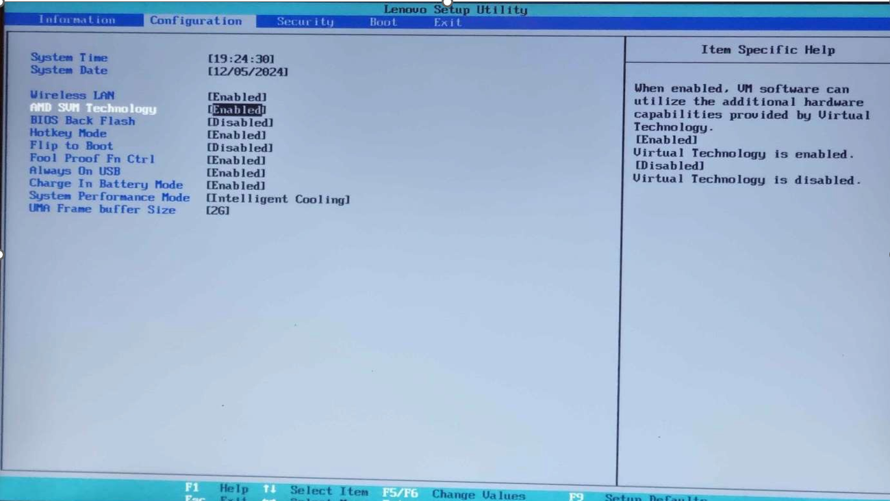
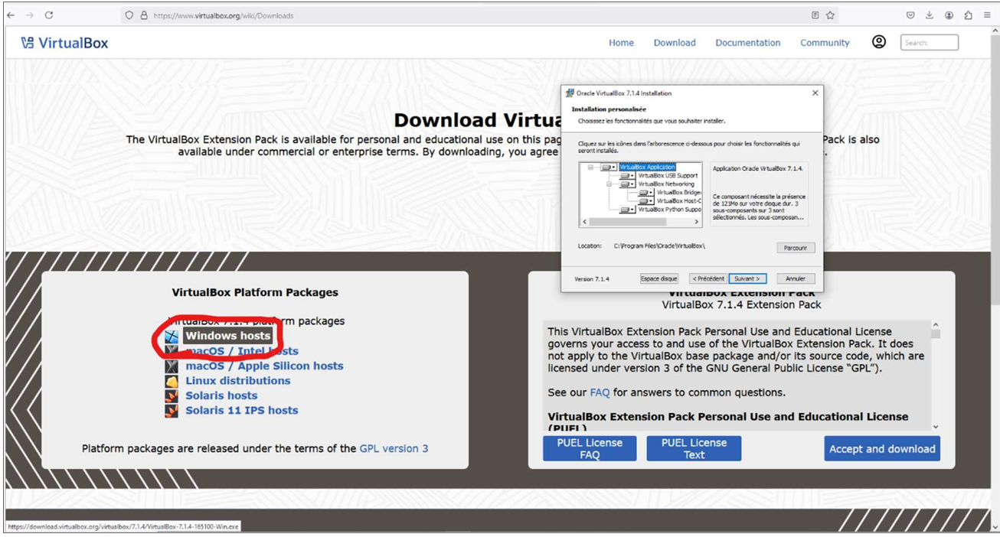
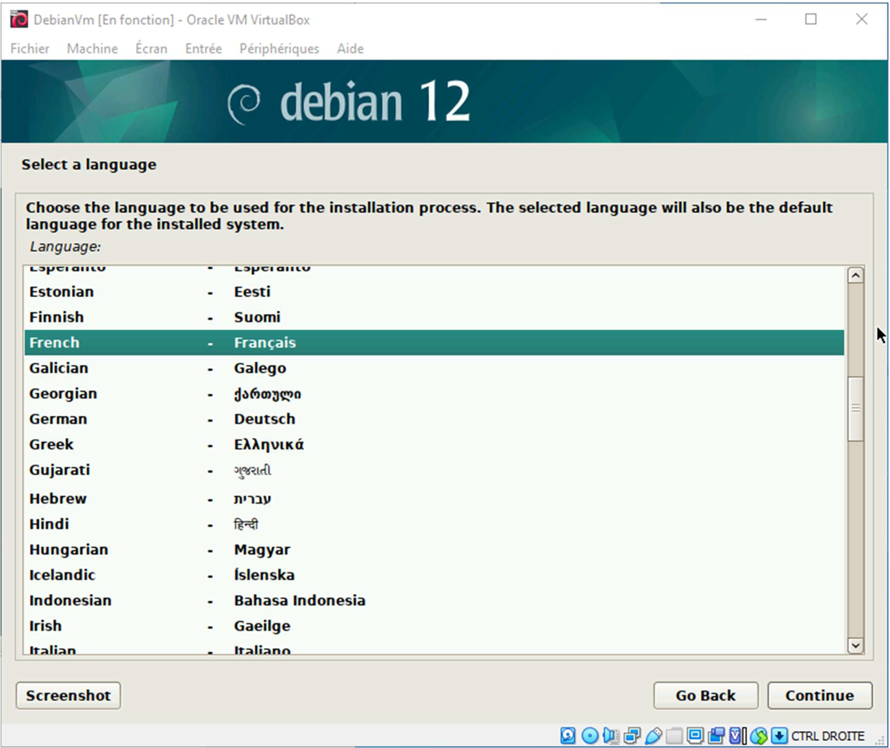
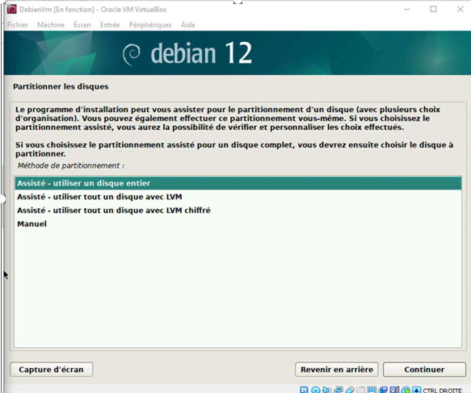
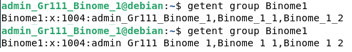
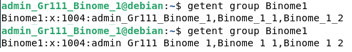

Installation et configuration de la machine virtuelle
Mise en place d’une machine virtuelle sur VirtualBox
Avant d’installer une machine virtuelle sur nos machines, il a été nécessaire d’activer la technologie de virtualisation au niveau du BIOS. Selon l’architecture du processeur, cette option porte différents noms : AMD-V / SVM pour les processeurs AMD et Intel VT-x pour les processeurs Intel. Sans cette activation, certains logiciels de virtualisation ne peuvent pas fonctionner correctement.
Choix du logiciel de virtualisation
Pour la création de notre machine virtuelle, nous avons choisi Oracle VM VirtualBox. Il s’agit d’un logiciel entièrement gratuit, avec lequel l’un des membres du groupe est déjà familier et que nous avions déjà installé sur nos machines.
L’installation de VirtualBox se fait en téléchargeant le fichier d’installation correspondant à la dernière version pour Windows depuis le site officiel https://www.virtualbox.org, puis en lançant l’exécutable. Il suffit ensuite de suivre les consignes affichées, celles-ci étant simples et similaires à tout autre programme d’installation.
Choix de la distribution Linux
La distribution Linux choisie pour cette machine virtuelle est Debian. Ce choix s’explique par le fait que Debian est la distribution avec laquelle nous sommes le plus familiers, notamment dans le cadre des travaux pratiques, et qu’elle est entièrement gratuite.
Nous avons installé la dernière version stable de Debian, Debian 12 « Bookworm », recommandée sur le site officiel de Debian : https://www.debian.org/releases/ . La version téléchargée est compatible avec les architectures 64 bits, ce qui correspond aux processeurs de nos machines.
Le fichier obtenu est un fichier ISO, représentant une image de disque servant de support d’installation pour Debian. Une nouvelle machine virtuelle est ensuite créée dans VirtualBox en précisant son nom, son emplacement et le système d’exploitation à installer.
Configuration matérielle de la machine virtuelle
VirtualBox demande ensuite de définir la quantité de mémoire vive à allouer à la machine virtuelle. Nous avons choisi 2048 MiB, valeur recommandée par la documentation officielle de Debian, nos ordinateurs disposant d’environ 8 Go de RAM.
Concernant le stockage, nous avons choisi de créer un nouveau disque dur virtuel. Le format sélectionné est le VDI (VirtualBox Disk Image), format natif de VirtualBox. L’allocation dynamique a été retenue afin d’utiliser uniquement l’espace nécessaire sur le disque physique.
La taille maximale du disque dur virtuel a été fixée à 15 Go, le minimum recommandé pour Debian étant de 10 Go. Cette capacité est suffisante pour l’hébergement d’un serveur web simple dans le cadre de cette SAE.
Avant le premier démarrage, la mémoire vidéo dédiée a été augmentée de 16 MiB (valeur par défaut) à 128 MiB afin d’améliorer la fluidité de l’interface graphique.
Le nombre de cœurs du processeur a également été réglé à 2 cœurs, la machine hôte disposant d’un processeur à 6 cœurs et 12 threads (Ryzen 5 5500U).
Installation de Debian
Au premier démarrage de la machine virtuelle, VirtualBox demande de spécifier le chemin du fichier ISO de Debian. Une fois sélectionné, le programme d’installation se lance automatiquement.
Nous avons choisi l’option « Graphical Install » afin de bénéficier d’une installation plus simple et intuitive.
Durant l’installation, la langue française, le fuseau horaire de la France et la disposition de clavier française ont été sélectionnés.
Le nom de domaine choisi est DebianVm.com, et le nom de la machine est debianvmsae.com, ces paramètres étant librement configurables.
Un mot de passe a été défini pour l’utilisateur root, puis un compte utilisateur non-administrateur a été créé afin de renforcer la sécurité du système.
Partitionnement du disque
Le partitionnement du disque a été effectué automatiquement en choisissant l’option « Utiliser un disque entier », suivie du schéma recommandé pour les débutants. Les options utilisant LVM n’ont pas été retenues en raison de leur complexité.

L’installation du programme de démarrage GRUB a été validée, celui-ci étant indispensable au démarrage du système Debian.
Création des comptes utilisateurs et groupes
Un compte administrateur admin_Gr111_Binome_YY a été créé à
l’aide de l’utilisateur root via les commandes su - puis
adduser
Deux comptes utilisateurs supplémentaires ont également été créés : BinomeYY_1 et BinomeYY_2.
Un groupe Binôme1 a ensuite été créé à l’aide de la commande
groupadd, et les utilisateurs ont été ajoutés à ce groupe via
usermod -aG. La commande getent a permis de vérifier
les membres du groupe.

 

La commande getent a été utilisée de telle sorte à voir qui sont les membres du nouveau groupe créé.
Personnalisation de l’invite de commande
L’invite de commande a été personnalisée en modifiant la variable
d’environnement PS1. La valeur \u permet
d’afficher uniquement le nom de l’utilisateur, tandis que \u@\h
affiche le nom de l’utilisateur suivi du nom de la machine.
Il est également possible de modifier la couleur et le style du texte à l’aide
de codes d’échappement ANSI. Ces paramètres ont été enregistrés de manière
permanente en modifiant le fichier ~/.bashrc.